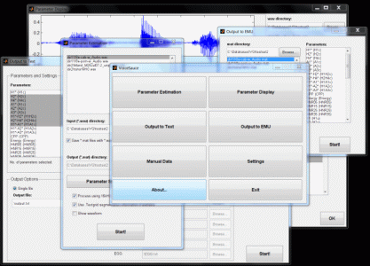

VoiceSauce is an application, implemented in Matlab, which provides automated voice measurements over time from audio recordings. Inputs are standard wave (*.wav) files and the measures currently computed are:
where (*) indicates that the harmonic/spectral amplitudes are reported with and without corrects for formant frequencies and bandwidths. More parameters to be added soon.
VoiceSauce requires Matlab versions 2015 and up. VoiceSauce has been successfully run under Windows (7/10) and Mac. Other operating systems may also work but have not been tested. If you are attempting to run VoiceSauce on a system other than Windows or Mac, you may need to install Tcl/Tk first; this can be obtained on ActiveState's website.
Since many of the parameters estimated by VoiceSauce depend on F0, meaningful results are only valid for voiced speech. Noisy speech may affect the accuracy of the F0 estimations and hence the values of the voice measurements.
The correction formula for the effects of the formant frequencies on harmonic amplitudes works best when there are accurate estimates of the formants. For example, speech produced by a high-pitched voice saying high vowels, with similar F0 and F1 values, may give a poor estimate of F1 and so return inaccurate results for H1*. It is recommended to inspect the formant frequency estimates to verify their validity. Not only the formant frequencies, but also their bandwidths, can cause errors in the corrections; see the documentation for more information.
It has been reported that wav files contained in folder names which consist of non-English characters may cause the formant estimator to fail. Equally, textgrid files from Praat encoded with "UCS-2 Big Endian" cannot be read by Matlab and will cause it to crash. Such textgrid files need to be re-saved as ANSI or UTF-8, which can be done in e.g. Notepad (Open -> Save As, under encoding select ANSI) before they can be used with VoiceSauce.
Computer memory can be an issue. Very long files for which all parameters are to be estimated may cause VoiceSauce to hang up, or to give an Insufficient Memory message. Computing fewer parameters at once, or dividing the files into smaller files, should help. The April 2015 version addresses one cause of such problems - the resources needed by SHR and shrF0.
Distribution is currently in two forms: (1) m-code for systems with Matlab, and (2) compiled executables for systems without Matlab. Note that the compiled executables requires the installation of the Matlab Component Runtime (only needs to be installed once).
Currently compiled executables are only available for Windows systems. We welcome assistance from anyone who would like to provide a legal compiled executable for Macs.
Version changelog is available here. Please let us know about any problems.
The p-code file format was changed from Matlab 2015 onwards. For this reason, support for pre-Matlab 2015 versions have been deprecated. The p-code only affects the Straight F0 estimator.
Note 1: Due to a licensing issue, Praat has been removed from the package. To install Praat, go to Settings, and under Praat, press "Install". Or to install manually, follow the instructions in /Praat/README.txt
Note 2: Snack is working again on OSX - thanks to Sam Gregory for providing a compatible binary version.
Matlab m-code
|
Compiled Matlab executables - Windows 7/10
|
|
VoiceSauce.zip
(1.7MB) Instructions:
Unzip and run
VoiceSauce.m from Matlab.
Note:
Requires
Matlab 2015a or later.
|
Matlab Component Runtime (32-bit)- MCR_R2015b_win32_installer.exe Instructions:
Run
MCRInstaller (only needs to be done once). Unzip VoiceSauce_bin.zip
and run VoiceSauce.exe.
Note:
Running VoiceSauce.exe
for the first time may take a few minutes to load.
|
Matlab m-code
|
Compiled Matlab executables - Windows XP/Vista/7
|
|
VoiceSauce.zip
(9.9MB) Instructions:
Unzip and run
VoiceSauce.m from Matlab.
Note:
Requires
Matlab 2007a or later.
|
Matlab Component Runtime - MCRInstaller.exe
(179MB) Instructions:
Run
MCRInstaller.exe (only needs to be done once). Unzip VoiceSauce_bin.zip
and run VoiceSauce.exe.
Note:
Running VoiceSauce.exe
for the first time may take a few minutes to load.
|
Documentaton is available here. Originally written by Chad Vicenik and later expanded by Spencer Lin, this manual is now maintained by Pat Keating, with expert input from Yen Shue. Requests for additions are always welcome. To cite this manual: Chad Vicenik, Spencer Lin, Patricia Keating, and Yen-Liang Shue (current year). Online documentation for VoiceSauce. Available at http://www.phonetics.ucla.edu/voicesauce/documentation/index.html.
EggWorks:
A free program by Henry
Tehrani, created for the NSF Voice project to analyze EGG signals
(closing quotients, peak increase in contact) in batch mode; also
includes utilities for splitting .pmf files into separate .wav files,
for inverting .wav files, and for converting .wav files from 32- to
16-bit.
EggWorks can be found here
(download link is at the bottom of the page).
This work was supported in part by grants from the NSF to UCLA.